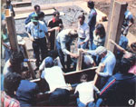
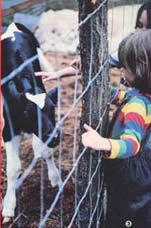
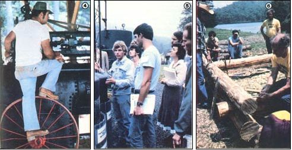

An Education In The Mountains
For visitors and staffers alike, Mother's 1980 seminars offered high-altitude learning, including serious study, back on the road again and more to come.
By the Mother Earth News editors
November/December 1980
For visitors and staffers alike, MOTHER's 1980 seminars offered a chance to enjoy . . .
It was a busy, full-to-the-brim summer for MOTHER's staff, as some 2,200 eager students, family members, and friends converged on our Eco-Village during July and August.
After the record-breaking (both in number of attendees and, for the second year in a row, in amount of rain) June seminar series, we could only hope for an equally good turnout for our Mother Earth Weeks Two and Three . . . and we weren't disappointed! A fine bunch of folks showed up - from all corners of the United States and from places as far away as New Guinea and Nigeria - to visit MOTHER's beautiful square mile of mountain property and learn a whole passel of back-to-the-land skills.
And, as pleased as we were with our guests, they seemed just as satisfied with their experiences throughout the six days of classroom discussions, hands-on demonstrations, and down-home entertainment. (As a Rhode Islander noted with pleasure, "I feel I've gained much more knowledge than I had anticipated - or even thought possible - from a one-day seminar.")
We also had our share of especially dedicated seminar-goers . . . one woman - who visited us from her home in Columbus, Ohio during each of the first three seminar weeks - reported that the classes she attended were "very, very informative and well worth my money". Another reader from Sweden - who was not able to attend in person - sent his daughter across the Atlantic to "take notes" for him . . . and, by the time she'd finished the final week of seminars in September, the well-informed young lady had taken just about every one of the 22 classes that MOTHER offered!
SERIOUS STUDY
Besides their time spent in the classroom (learning about everything from herbal medicine to methane generators), the 1980 participants had numerous opportunities to "get their feet wet" and try out some of their newly acquired skills. July and August seminar attendees continued the construction work we began earlier this summer on a solar rammed earth structure and a cordwood castle . . . and tended the produce in MOTHER's French intensive gardens.
A lot of folks also stopped by the new steam-powered sawmill, took a close-up look at MOM's experimental high-mileage vehicles, and checked out the bumper crop of vegetables growing in our hydroponic setup (which is now housed in MOM's stackwood dome greenhouse). All of these doin's were captured on film by MOTHER's own video team . . . and by a crew from P. M. Magazine, the nationally syndicated television news program that has recently featured THE Mother Earth News (restricted) in several of its segments.
. . . AND EXTRACURRICULAR FUN
Believe it or not, our guests usually did have a bit of free time left over in the evenings . . . and that's when most of the crowd gathered around the nightly bonfires for some good ol' mountain entertainment - including the fine artistry of the Southern Appalachian Cloggers, the Midnight Plowboys, and traditional musician David Holt - plus the ever-popular Tuesday and Thursday hot dog roasts (featuring tasty preservative-free wieners and whole wheat buns from Shiloh Farms).
In fact, folks tended to have so much fun at the evening "socials" that a few members of the audience wanted to get in on the act themselves . . . so our entertainment committee worked up an "open house" talent show during the August week. Both visitors and staffers did a little high-steppin' at that get-together . . . and one family even performed their original ballad about THE Mother Earth News (restricted) !
For those who wanted to pack still more learning into their visit, a number of free evening mini -classes were available to choose from. The p.m. schedule included overviews of the windpower, rammed earth, and log building courses . . . as well as guided tours of MOTHER's two yurts, a demonstration of fluidized bed combustion, and visits to MOM's hydroponic gardens.
Amid this flurry of "grown-up" activity, the young'uns were certainly not ignored. As usual, MOTHER's Child Care Center - operated by Nedra Wilson and her company of energetic helpers - kept the children busy with trail hikes, craft projects, storytellers, puppet shows, and imaginative games on the Eco-Village's unique playground. The older youngsters were also entertained by a day-long visit with Ed Walkinstik (of "Solar Chariot" fame).
THERE'S MORE TO COME
If you missed the seminars this year, you'll probably want to make your plans soon to join us in 1981. (Oh sure, the first snowfall of the season may be starting to drift past your window as you read this . . .but it's never too early to start dreaming about next summer! )
You can - right this instant - take the first steps toward making that dream a reality, too! Because, if you simply turn to page 93 of this issue, you'll be able to take a look at the new schedule of classes that'll be offered during MOTHER's expanded and improved 1981 summer seminar series! So check out the offerings listed in that report . . . fill in the handy preregistration form . . . drop it, along with your deposit, in the mail . . .and we'll look forward to welcoming you to our beautiful mountain property (which, itself, will hold a number of surprises for even veteran seminar attendees!) in a few short months!
MOTHER'S BACK ON THE ROAD AGAIN!
Although our at-home classes will close for the winter, our traveling seminar will begin its next tour - just about the time you receive this magazine - with a newly expanded program. In addition to the "Farmer's Alcohol" course that's been so popular on previous tours, MOM's roadshow now includes another one-day seminar . . . and this one is entitled "Ultra-Low-Cost Solar Heating Systems".
The "double feature" will play two successive days on each stop of the current two-month, thirteen-city swing through the Western states. Seminars Director Ben Fleming will lead the solar course, in which participants have a chance to examine - and even experiment with - a whole collection of new solar hardware that MOTHER's staffers have put together for the class.
In "Ultra-Low-Cost Solar", students will learn actual construction techniques for domestic water heaters, space heating air collectors, and storage units. Then, they can practice their new-found expertise on MOM's own equipment . . , including three kinds of in-line collectors, a fluorescent tube setup, our classic corrugated collector, and more.
"Farmer's Alcohol" - conducted by MOTHER's ethanol fuel experts - features the lowdown on mash recipes, distillation, licensing, and engine conversion. Participants will get a look at MOTHER's alcohol-powered pickup truck and watch ethanol being brewed in our six-inch column still, too. And the "second generation" of our alcohol-fuel-making equipment - which includes a new 100-gallon modular still and an oil-circulating boiler - will also be accompanying the tour this fall for the first time. From October 17 through December 10, MOTHER's combined Alcohol-Solar seminar will be crisscrossing the western half of the U.S. . . . with stops scheduled in Denver, Salt Lake City, Butte, Seattle, Portland, Eugene, Sacramento, Fresno, Los Angeles, San Diego, Phoenix, Albuquerque, and Dallas. If you live in or near - or you plan to visit - one of those cities, keep your eyes and ears open to find out when THE Mother Earth News (restricted) is coming to your area! Details will be published in local newspapers and on radio and T.V. stations . . . or you can write to Mother's Seminars, P.O. Box 70, Hendersonville, North Carolina 28791 (please enclose a self-addressed, stamped envelope) for more information.
RELATED ARTICLE:
REGISTER NOW...FOR MOTHER'S 1981 SUMMER SEMINARS
|
 Many hands make light work. . . especially when . the project is a rammed earth solar greenhouse |
 A few of the many seminar activities: Alcohol-powered Pterodactyls made the Ultralight Aircraft Seminar a hit among the would-be pilots. |
 Part of the fun in MOM's Backyard Livestock class is visiting with the newborn animals. |
|
 (FROM LEFT) MOTHER staffers were on hand to operate our brand new sawmill, which is powered by this wood-fired steam engine... Classroom discussions of biogas were illustrated by a close-up look at some methane digesters... B. Allan Mackie ? of a Mackie School of Log Building ? demonstrates how to construct an attractive, low-cost home with logs. |
|
|